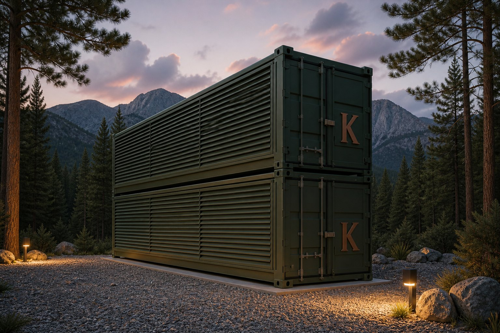
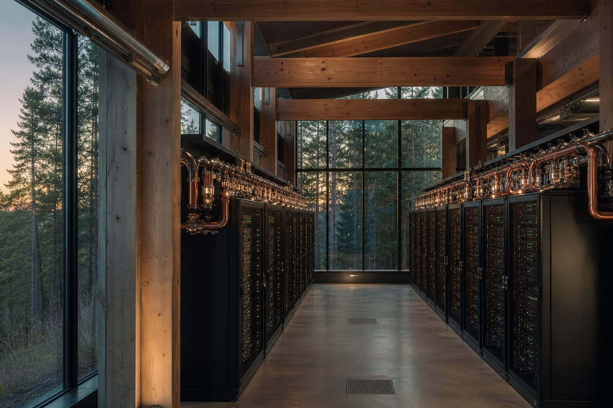
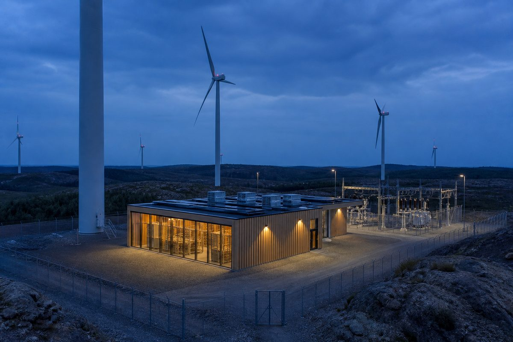
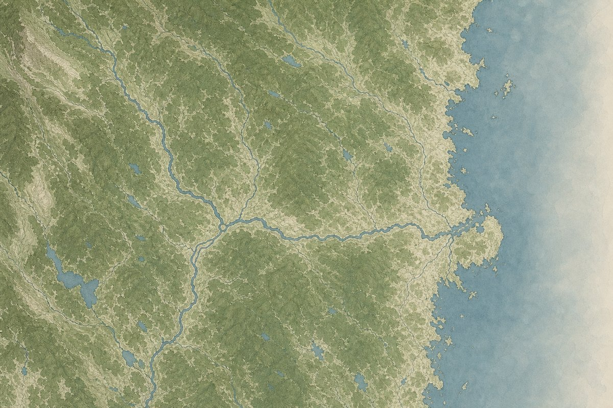

Energy without a buyer
Northern Europe builds Energy faster than demand can take it.

Thermodynamic Compute
Hybrid, modular data centres. Compute that can flex.
Visualization Kelvin Flexbox
The gap
A quarter of Europe’s wasted Energy is trapped in northern Sweden. Every TWh of it is inventory.
Northern Europe builds Energy faster than demand can take it.
AI training and batch inference sit behind multi-year queues.
Sweden’s north is spilling cheap power; the south imports expensive.
Kelvin sits interruptible Compute on that surplus.
Approach
Behind the meter. Two products off the pad.
The host keeps the process.


Visualization Kelvin Flexbox
Curtailed wind and solar, hydro in negative-price hours, spare industrial connection. Behind the meter.
AI and HPC that can checkpoint. A 40 ft ISO at the source. ≈1 MW.
Heat as an asset, not a side effect — local on site, municipal or district.
The loop
The load sits at the surplus.
Energy in
Kelvin Flexbox
Value out
01
Sit the load where the surplus already is — behind the meter or spare industrial.
02
Compute pauses so the host stays on.
03
FCR-D, aFRR and mFRR. Primary Nordic energy markets.
04
Every kilowatt of Compute leaves as Heat. Capture is designed in.
Why Kelvin
The connection earns all three.
01
Interruptible Compute on surplus Energy. The baseline.
02
Compute flexes instead of the host. The load is built to move — FCR-D, aFRR and mFRR.
03
Capture designed in. Local on site, municipal or district where a network exists.
The system
Four parts on one pad.
Two tracks — email is the conversation.
One 40 ft ISO.
Sits at surplus
The load follows the Energy
Three products
Compute, Flexibility and Thermal/Heat
An asset, not a side effect
Capture designed in
Unit view

On the pad
What others assemble on-site piece by piece ships as one module. Pre-tested.
Controller and meters, one unit with the Flexbox.
The flange. Capture designed in. Thermal/Heat out.
Behind the meter or grid-connected. Kelvin brings the unit. Plug-and-play is pad, connection and permits.
Kelvin brings Compute, Flexibility, Thermal/Heat — software, hardware, infrastructure — at the surplus pocket. Checkpoint in the contract.
How the megawatt pays
The baseline whenever the unit is running.
Paid for availability.
Paid when the load moves. No cycle penalty.
Where a sink exists — local on site, and municipal or district where a network exists.
Kelvin runs the Compute; the host keeps core operations. Compute earns while it flexes. At generation. At the mill. Compute vs batteries.
Scale


A valid first step — one module on the pad.
Hosts
01 / 07
01 Industrial


Local Heat at the mill — premises and process on site. The mill stays on; Compute flexes.
Flexbox, campus, battery
| Criterion | Flexbox | Campus | Battery |
|---|---|---|---|
| First step | One 40 ft ISO is valid | Queue + shell + hall | Idle between calls. |
| Power | ≈1 MW · ×2 ≈2 MW | MW on request — no catalogue figure | Stores Energy. Does not compute. |
| Thermal/Heat | Designed in | Usually dumped | None |
| Dispatch | <0.7 s · no cycle degradation | Always-on colo | Cycle degradation. Idle between calls. |
Compute earns while it flexes. Compute vs batteries.
Energy and hosts first. Then AI, HPC and cloud that can checkpoint. Flexibility in the contract.
Hosts
Workloads
01 / 07

VisualizationTimber interior — mill that stays on.
Industrial loads
1.0
Sawmills, pulp, drying. Local Heat on site — process and premises. The mill cannot pause — Compute flexes instead.
VisualizationHeat into the network that already serves buildings and homes.
Residential
2.0
Heat into the district network that already serves buildings and homes. A Flexbox can feed that pipe.
VisualizationTimber halls at generation.
Hydro
3.0
Hydro at generation, behind the meter or spare connection. Compute absorbs the spill; the host keeps generating.
VisualizationTimber halls. Heat sink next to the pad.
VisualizationTimber hall at generation. Dispatchable adjacency.
Gas
5.0
An industrial host with dispatchable adjacency.
VisualizationTimber hall at wind. Surplus at generation.
Solar & wind
6.0
Fully renewable generation. Compute behind the meter absorbs surplus so the Energy is used, not switched off.
VisualizationProcess Heat on an industrial pad.
Manufacturing / process
7.0
Drying, kilns, process. The flange is sized to the line you already run.
VisualizationKelvin Flexbox — interruptible training and batch inference.
VisualizationRacks for simulation and rendering that can wait.
HPC
2.0
Jobs that can wait. The load moves when the grid calls.
VisualizationTimber halls at dusk. Burst and batch that can pause.
Cloud
3.0
Capacity is on request. Work that can wait.

VisualizationModule at the source, behind the meter.
Edge
4.0
Behind the meter, at generation. A 40 ft Flexbox at the source.
VisualizationKelvin Flexbox — a workload that can pause.
Bitcoin
5.0
Public products remain Compute, Flexibility-as-a-Service, and Thermal/Heat.
You
Location, surplus hours, the connection (behind the meter or spare industrial), a Heat sink if there is one.
Kelvin
Flexbox. Hardware, software, infrastructure. Compute, Flexibility, Thermal/Heat. Ops. Kelvin handles everything.
Interruptible HPC. Checkpoint in the contract.
No single price, market or machine decides the outcome.
01
The connection earns Compute between dispatches — interruptible AI training, batch inference, simulation and rendering. Checkpoint is in the contract, so the job pauses and comes back.
Income a battery cannot print. Kelvin runs the Compute.
02
Sit behind the meter at hydro, geothermal, solar or wind — or on spare industrial electrical already on the plot.
Extra grid load stays low. The Energy stays on the plot.
03
Thermal/Heat is a product, not CSR. Capture is designed into the Flexbox: local process and premises on site, district Heat where a network exists.
Residential is district Heat only — not a box in a house.
04
Clean Energy is switched off because the load cannot move. We sit on that surplus.
A module at generation.
05
Northern surplus, southern demand. Wires are a multi-year build. A 40 ft module sits at the Energy instead of queueing for a wire.
The connection is the asset.
06
Batteries store Energy, sit idle, cycle-degrade and earn one stream. Compute earns while it flexes — and heats while it earns.
No cycle penalty. Dual revenue on the same connection.
07
Pad, connection and permits. Weeks, not a multi-year queue.
Cadence, not an SLA.
08
Compute plus grid services, Thermal/Heat and mitigation run together. Modular. Surplus Energy. Low grid-load. Turn-key.
Nine revenue lines against one.
Containerised Flexbox units do not need the major grid reinforcements a hyperscale urban build does. A siting choice. Extra grid load stays low.
Sites
Three plots in Hälsingland. Load at surplus. Status Plot.
01
Extra grid load stays low.
02
Local, municipal or district.
03
Halls that already exist. Two were data-centre halls.

Stockholm is postal. First plots stay Plot.
How we start
Energy host or Compute buyer. Email the facts — Kelvin handles the stack.
Energy host
Location, connection, hours, Heat if any. We map the loop and write back. A short note is enough.
Compute buyer
Say what has to run — training, batch inference, simulation — and what can wait. We map surplus and Flexibility-as-a-Service. We write back.
Straight answers. Email for the rest.
Kelvin runs the Compute — the unit and the cooling. You remain the Energy host: site access, the connection, and the Heat sink where you have one.
Paid on stand-by, on activation, and while Compute is running. See How the megawatt pays and Flexibility.
Low-demand retrofit, high-demand plug-and-play.
The load is built to ramp. When the grid is tight or the surplus disappears, jobs checkpoint and the site steps down. Heat follows the load — a paused unit is not a baseload boiler.
Thermal/Heat is a product. Capture is designed in. Local on site, and a pipe into a municipal or district network where one exists. We size the flange together. We do not take over your network.
The north spills cheap power; the south imports expensive. Kelvin sits the load at that surplus. Energy.
No. Behind the meter, at the surplus. Energy.
No. One Flexbox is a valid first step — ≈1 MW / 40 ft. Pad and connection, not a full campus. Scale.
Kelvin. The host brings the pocket — location, surplus, connection. Kelvin supplies the stack — hardware, software, infrastructure — at the surplus.
Industrial and residential loads cannot pause or curtail on demand. Compute flexes instead. Every large load needs this. Almost none of them can build it. Flexibility.
Batteries store Energy. Compute earns while it flexes — and wins on every row. Compute vs batteries.
Flexibility-as-a-Service — paid on stand-by, paid on activation and paid while Compute is running. The host stays on. Flexibility.
Frequency needs a response in milliseconds, not minutes. Flexbox is built to move in <0.7 s.
A load that can pause. Bitcoin.